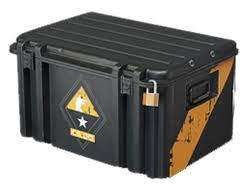

Cena
Cena csgo beden se určuje podle ceny v marketu se kterou můžou hýbat lidi nebo zběratelé.
Funkce
K otevření case potřebujete case a klíč, průměrná cena otevření case je okolo 3 euro. Když otevřete bednu tak vám spadne skin s určenou raritou (čím lepší tím dražší), obdrženej skin se poté dá prodat nebo ho použít v samotný hře.
Temná stránka
Temná stránka otevírání beden je závislost. Některé bedny mohou mít vysoké ceny kvůly nedostupnosti a to je cíl sběratelů který můžou nechat v této hře miliony korun.
